Back to Wellington New Zealand!
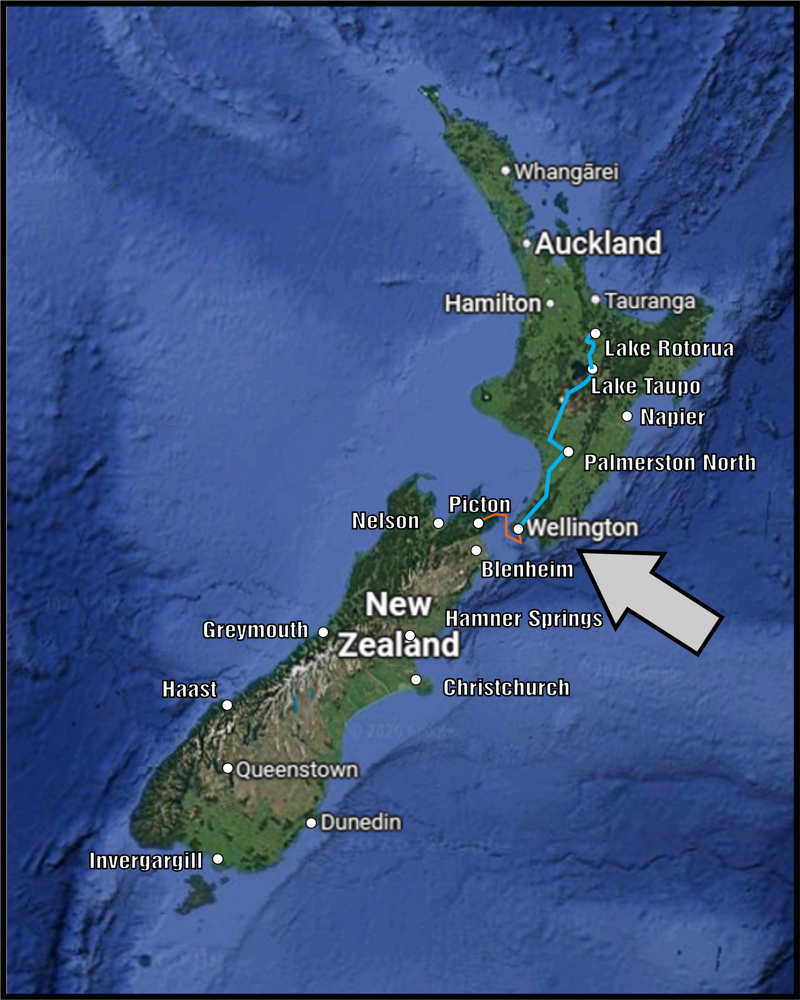
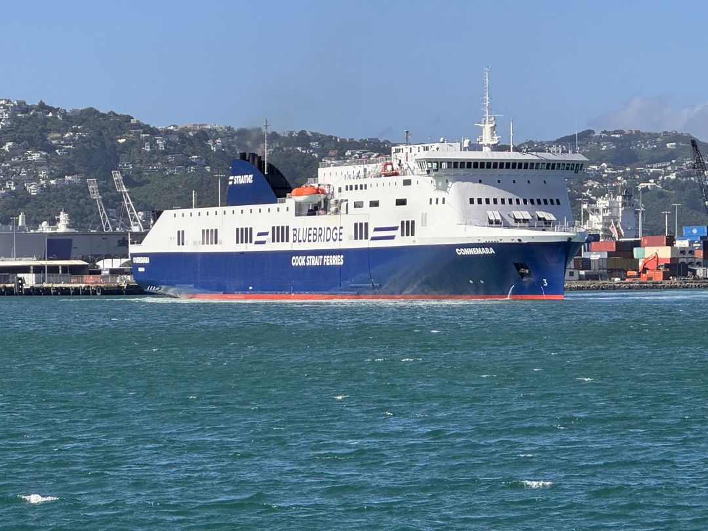
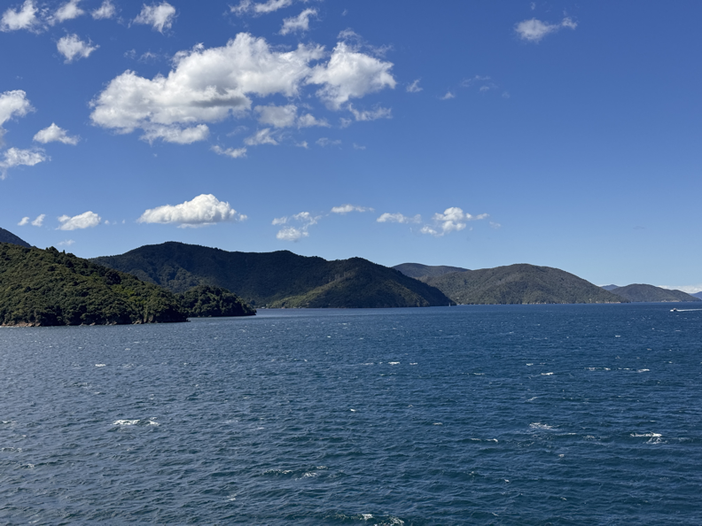
Night view from in Wellington!
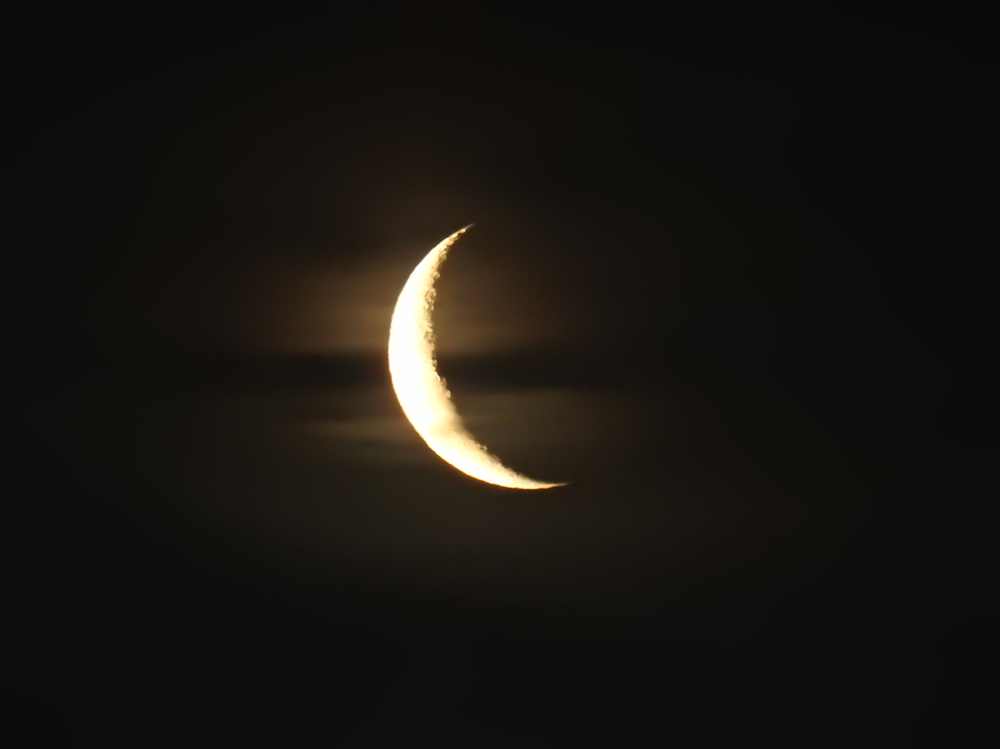
View from our most excellent friend's house!
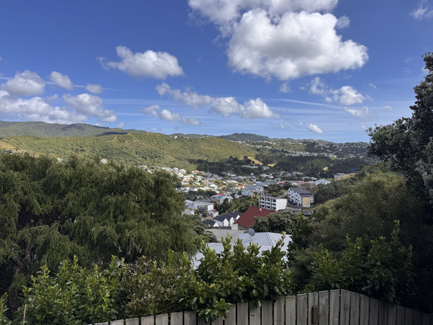
HAD to revisit Hell's Pizza in Island Bay!
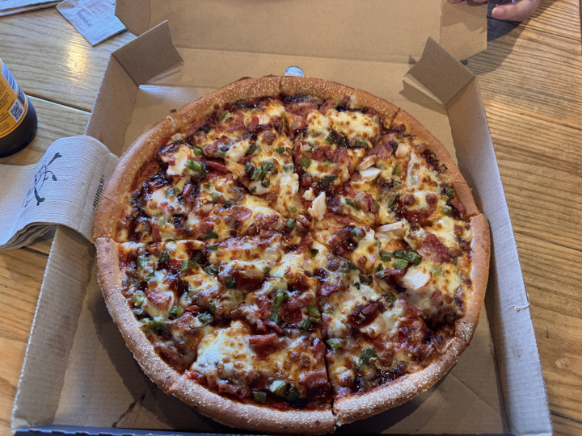
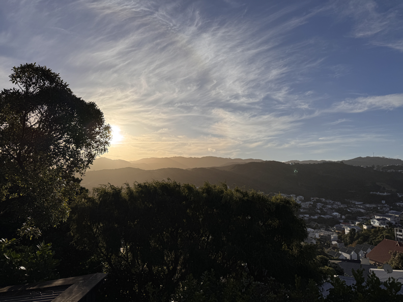
Revisited the WETA Workshop Lord of the Rings Shop and Woods.
They were doing a lot of repairs to the woods after the storm that delayed our ferry.
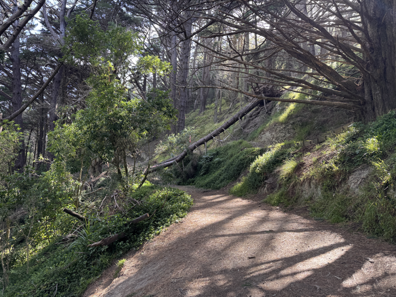
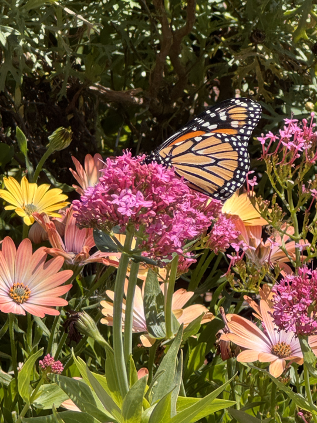
In Taupo via bus, visited an SPCA Op Shop (thrift store) which had an Alaskan Tundra:
and a Domesday book (in the travel Section!) (bought and re-homed to a Ildavn Herald)
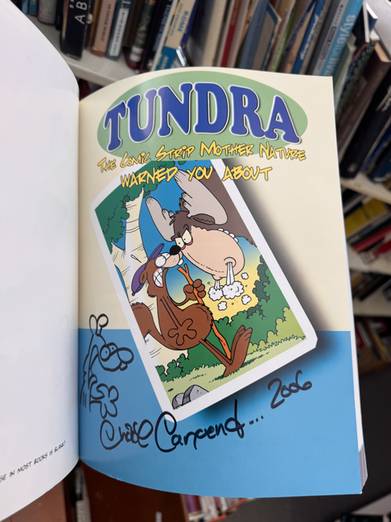
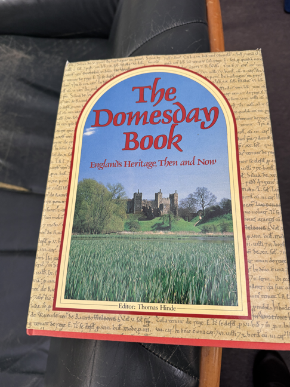
Visited the Taupo Museum - mostly about the Volcano that formed the lake.
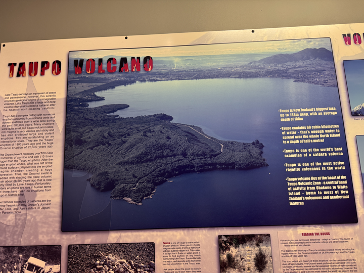
We housesat and helped tidy up the estate!
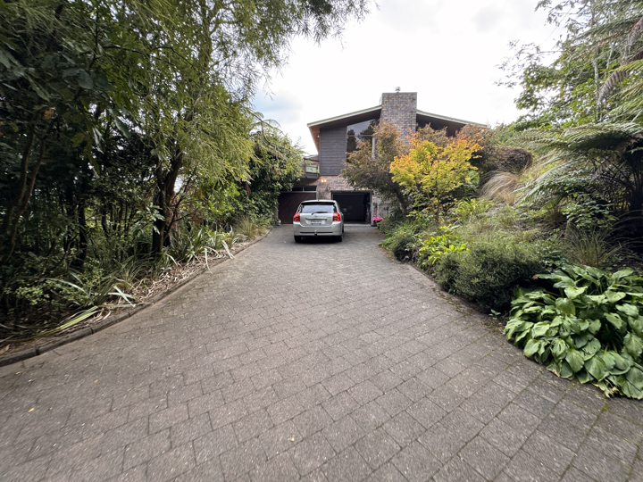
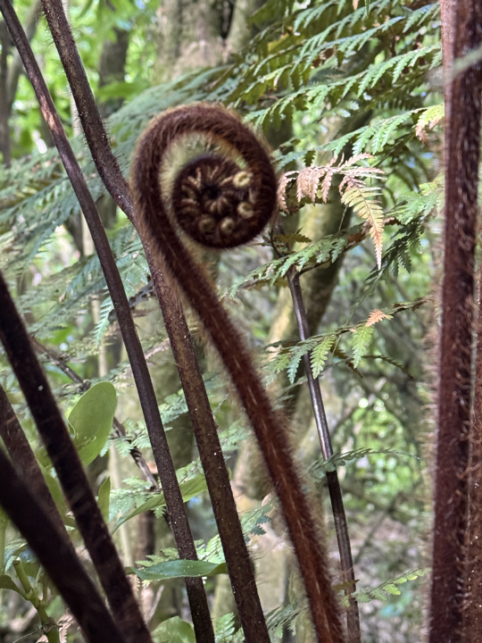
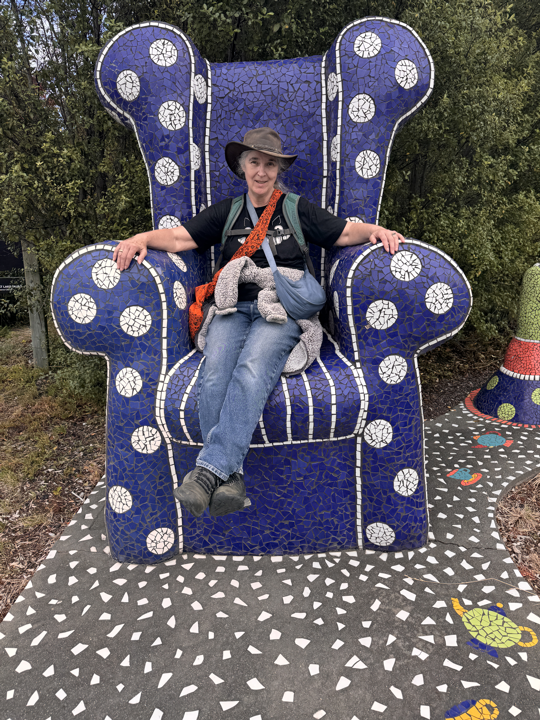
Down in Turangi near the South end of Lake Taupo.
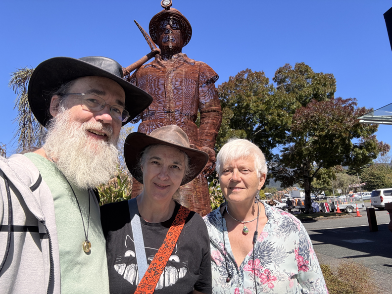
Spent some time with our amazing friends in Wellington and explored further.